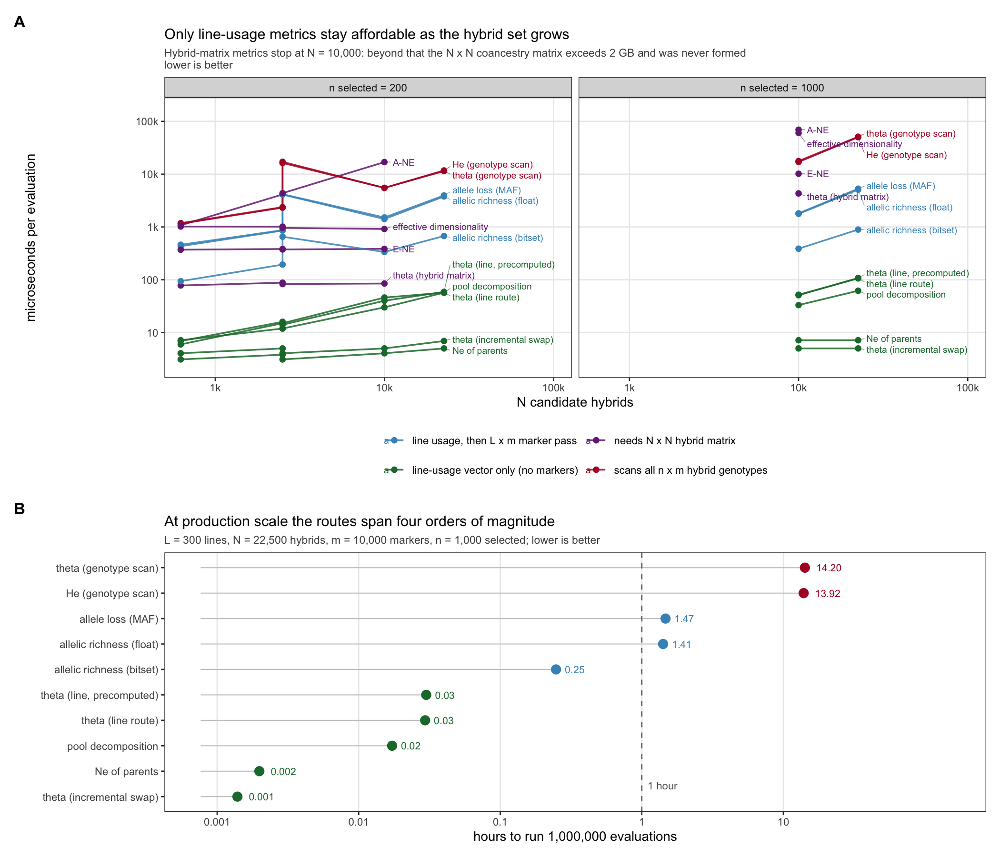
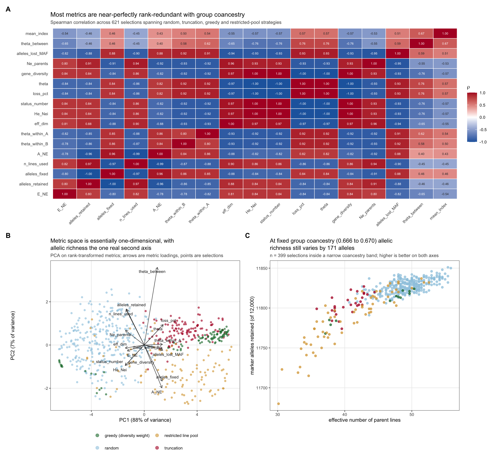
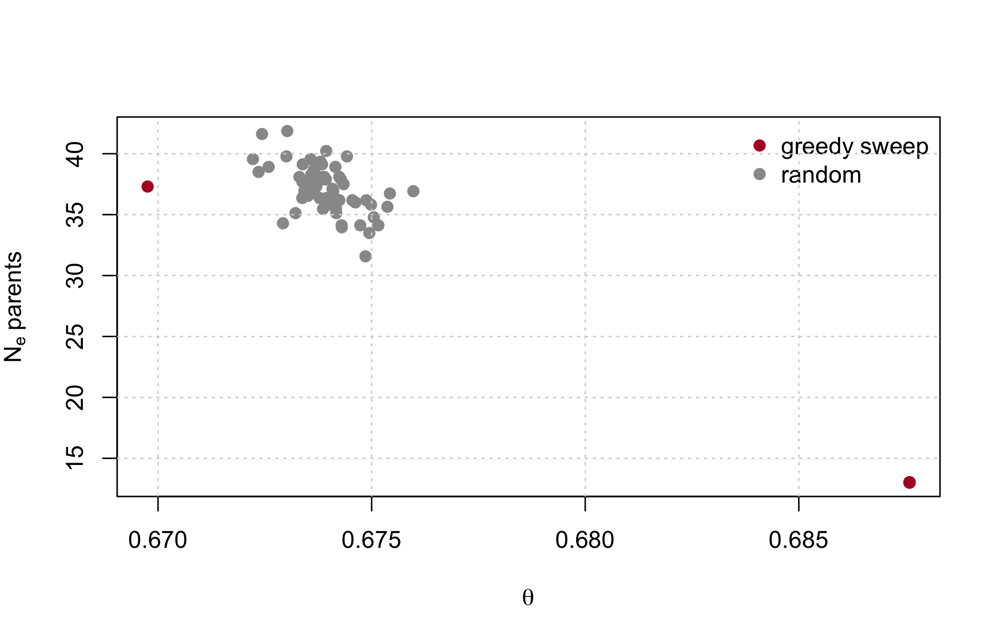
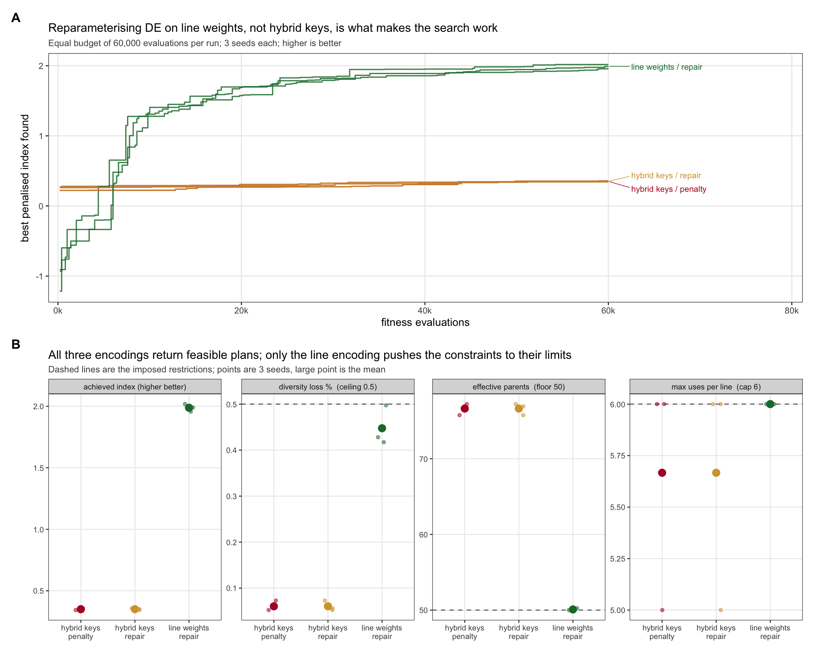

| Role | Metric | Where it runs | Cost per evaluation |
|---|---|---|---|
| Constraint | Group coancestry theta of the selected set, as proportional loss of gene diversity against a same-size resampling baseline | inside DE, every evaluation | 5 us (incremental) / 106 us (full) |
| Second constraint | Effective number of parent lines | inside DE, every evaluation | 7 us, shares the state vector |
| Validation | Marker alleles retained (allelic richness) | on the returned plan only | 0.9 ms |
| Validation | Within/between heterotic-pool decomposition of theta | on the returned plan only | 62 us |
| Validation | Status number Ns = 1/(2 theta) | free, algebraic | 0 |
10 Choosing metrics: collapse, cost, redundancy
Chapter 9 built a catalogue. This chapter asks which of it to keep, and answers with two questions the catalogue could not: what does each metric cost per evaluation, and how much of what it reports is already in \(\theta\).
The recommendation is two metrics inside the optimiser and three at validation.
Three findings drive this, and each is derived and verified below rather than asserted.
10.1 Finding 1: the hybrid coancestry matrix is never needed
10.1.1 Derivation
Let lines \(a, b, \dots\) be homozygous, with \(\mathbf{f}^L\) their molecular coancestry matrix. The hybrid \((ab)\) carries one genome from each parent. Molecular coancestry is the probability that two alleles, one drawn at random from each individual, are identical in state. Drawing at random from hybrid \((ab)\) selects parental genome \(a\) or \(b\) with probability \(\tfrac12\) each, and likewise for \((cd)\), so
\[f_{(ab),(cd)} \;=\; \tfrac14\left(f^L_{ac} + f^L_{ad} + f^L_{bc} + f^L_{bd}\right).\]
Now let a selection of \(n\) hybrids use line \(a\) exactly \(k_a\) times across all its parental slots, \(\sum_a k_a = 2n\), and write \(w_a = k_a/(2n)\). Group coancestry of the selected hybrids is the mean of \(f\) over all ordered pairs; substituting the identity above and collecting terms by line gives
\[\theta_S \;=\; \mathbf{w}^{\top}\, \mathbf{f}^L \,\mathbf{w},\]
with the selection allele frequencies following the same collapse, \(\bar{\mathbf{p}} = \mathbf{w}^{\top}\mathbf{G}^L\).
10.1.2 Four consequences
The \(N \times N\) hybrid matrix is never required. Memory drops from \(O(N^2)\) to \(O(L^2)\). At \(L = 300\) lines and \(N = 22{,}500\) hybrids that matrix would occupy 3.77 GB; in the benchmark below it was deliberately never formed, and every metric that needs it simply has no timing entry at that scale.
The vector \(\mathbf{w}\) is a sufficient statistic. Group coancestry, gene diversity, status number, effective number of parents, selection allele frequencies and the heterotic-pool decomposition are all functions of \(\mathbf{w}\) alone. One \(O(L)\) tabulation per evaluation serves all of them.
Swapping one hybrid is a rank-2 update. Exchanging hybrid \(h\) for \(h'\) changes at most four entries of \(\mathbf{w}\), so \(\theta\) updates in \(O(L)\) rather than \(O(L^2)\).
The discrete hybrid problem is exactly optimal-contribution selection on lines, restricted to the lattice \(w_a \in \{0, 1/(2n), 2/(2n), \dots\}\). That connects it directly to the OCS literature of Chapter 13, with the caveat that the lattice restriction makes it combinatorial rather than the continuous quadratic programme OCS usually solves.
10.1.3 Verification
Every identity was checked against literal transcriptions of the reference implementations across \(F_{ST} \in \{0.05, 0.15, 0.35\}\), two seeds and \(n \in \{20, 100\}\), thirty replicate selections each.
| Identity | Worst deviation | |
|---|---|---|
| max_pairwise_f | pairwise f: hybrid vs line formula | 1.1e-16 |
| max_theta_sub_vs_line | theta: line route vs f submatrix | 2.2e-16 |
| max_theta_sub_vs_freq | theta: line route vs allele-frequency route | 1.1e-16 |
| max_pbar | selection allele frequencies | 0 (exact) |
| max_He | Nei He | 0 (exact) |
| max_Neparents | effective number of parents | 2.1e-14 |
| max_alleles_lost | allele loss at MAF threshold | 0 (exact) |
| max_theta_pools | pool decomposition | 1.2e-15 |
| max_swap_update | incremental swap vs full recompute | 4.4e-16 |
| bitset_vs_literal | bitset allelic richness vs literal count | 0 (exact) |
The same identity, live, on the book’s own data:
ctx <- fast_ctx(simulate_data(book_cfg))
set.seed(51)
idx <- sample.int(ctx$N, 60)
c(via_hybrid_matrix = theta_group(idx, ctx),
via_line_route = fast_theta(idx, ctx),
difference = theta_group(idx, ctx) - fast_theta(idx, ctx))
#> via_hybrid_matrix via_line_route difference
#> 0.6745897 0.6745897 0.0000000And the incremental swap, which is what makes a local search affordable:
st <- theta_state(idx, ctx)
out <- idx[1]; inn <- setdiff(seq_len(ctx$N), idx)[1]
st2 <- theta_swap(st, out, inn, ctx)
c(after_swap_incremental = st2$theta,
after_swap_recomputed = theta_group(c(idx[-1], inn), ctx),
difference = st2$theta - theta_group(c(idx[-1], inn), ctx))
#> after_swap_incremental after_swap_recomputed difference
#> 6.747225e-01 6.747225e-01 2.220446e-16
WarningTwo implementation traps found while building this
R’s $ performs partial matching on lists, so ctx$f silently returns ctx$fL when the hybrid matrix is absent – a wrong answer with no error. Every accessor in the package uses ctx[["f"]]. Any pipeline carrying both matrices in one list is exposed to this.
R integers are signed 32-bit, so bitwShiftL(1L, 31L) is NA and the usual multiply-based popcount overflows. The bitset in pack_lines() packs 31 bits per word, and popcount32() counts them with a branch-free SWAR routine.
10.2 Finding 2: what each metric costs

At \(L = 300\) lines, \(N = 22{,}500\) hybrids, \(m = 10{,}000\) markers and \(n = 1{,}000\) selected:
| metric | us per evaluation | hours per 1e6 evals |
|---|---|---|
| theta: incremental swap | 5.0 | 0.0014 |
| Ne_parents | 7.2 | 0.0020 |
| pool decomposition | 62.0 | 0.0172 |
| theta: LINE route | 106.1 | 0.0295 |
| theta: line route precomp | 108.0 | 0.0300 |
| allelic richness: bitset | 891.9 | 0.2478 |
| allelic richness: float | 5091.0 | 1.4142 |
| allele loss (MAF thr) | 5296.9 | 1.4714 |
| He / gene diversity(freq) | 50096.0 | 13.9156 |
| theta: allele-freq route | 51113.1 | 14.1981 |
Three thresholds matter:
- The genotype-scan route is disqualified. Computing \(\theta\) from selection allele frequencies costs 14.2 hours per million evaluations. The line route costs 106 us – a 482x reduction for an algebraically identical number.
- The incremental swap is effectively free at 5 us, or 1.4 seconds per million evaluations. \(N_{e,\text{par}}\) at 7 us shares the same state vector and is free in practice once \(\theta\) has been computed.
- Allelic richness cannot go inside the loop, and need not. The bitset implementation is 5.7x faster than the floating-point version, but still 178x the cost of the line-route \(\theta\). It belongs at validation.
The same ordering is visible at the book’s scale, where every route is affordable and so the comparison is about ratios, not feasibility:
fmt(cost_per_eval(ctx, n_sel = 60, reps = 40), 1)| metric | us_per_eval |
|---|---|
| theta_group | 25 |
| theta_from_freq | 150 |
| ne_parents | 0 |
| alleles_lost | 125 |
| ENE | 50 |
| ANE | 450 |
| eff_dim | 125 |
| Gst | 1300 |
10.3 Finding 3: the metric space is nearly one-dimensional
621 selections were generated across four strategy families – random, truncation at varying intensity, greedy construction over a grid of diversity weights, and restricted line pools – and all 17 metrics computed on each.

PC1 absorbs 88% of the rank variance; PC2 adds 7%. Rank correlations with \(\theta\) are \(|\rho| \ge 0.93\) for status number, \(H_e\), effective dimensionality, \(N_{e,\text{par}}\) and MAF-threshold allele loss. Reporting these alongside \(\theta\) adds cost and length, not information.
But the marginal correlation is the wrong test. The question is whether a metric varies at fixed \(\theta\) – because \(\theta\) is the constraint, and any metric that is a deterministic function of it cannot discriminate among plans the optimiser treats as equivalent. Two analyses agree:
- After regressing each metric’s ranks on \(\theta\) (quadratic), allelic richness retains 52% of its rank standard deviation and \(N_{e,\text{par}}\) retains 36%. Effective dimensionality retains 25% – close to a restatement of \(\theta\).
- Inside a band \(\theta \in [0.666, 0.670]\) containing 399 selections, alleles retained still spans 171 markers (11,680 to 11,851 of 12,000) and \(N_{e,\text{par}}\) spans 30.1 to 55.8.
Plans the constraint cannot distinguish differ materially in how much allelic variation they carry forward. That is the empirical justification for the two-metric recommendation.
10.3.1 Reproducing the argument at book scale
set.seed(77)
grid <- do.call(rbind, lapply(seq(0, 4, length.out = 30), function(w) {
s <- sel_greedy(ctx, 60, w = w)
data.frame(w = w, theta = theta_group(s, ctx), Ne_par = ne_parents(s, ctx),
lost = alleles_lost(s, ctx))
}))
rnd <- do.call(rbind, lapply(1:60, function(i) {
s <- sample.int(ctx$N, 60)
data.frame(w = NA, theta = theta_group(s, ctx), Ne_par = ne_parents(s, ctx),
lost = alleles_lost(s, ctx))
}))
all <- rbind(grid, rnd)
plot(all$theta, all$Ne_par, pch = 19, col = ifelse(is.na(all$w), "grey60", "#b2182b"),
xlab = expression(theta), ylab = expression(N[e]~"parents"))
legend("topright", c("greedy sweep", "random"), pch = 19,
col = c("#b2182b", "grey60"), bty = "n")
grid()
band <- all[abs(all$theta - median(all$theta)) < 0.0015, ]
c(n_in_band = nrow(band),
theta_span = diff(range(band$theta)),
Ne_par_min = min(band$Ne_par), Ne_par_max = max(band$Ne_par),
alleles_lost_span = diff(range(band$lost)))
#> n_in_band theta_span Ne_par_min Ne_par_max
#> 55.000000000 0.002502847 31.578947368 41.860465116
#> alleles_lost_span
#> 31.000000000
NoteA caveat on transfer
These numbers come from a two-pool simulation at \(F_{ST} = 0.15\). The qualitative conclusion – near one-dimensionality, with allelic richness as the exception – is robust in direction, but the exact residual fractions shift with pool divergence and marker density. Re-running the redundancy analysis on real genotypes is a half-hour job and worth doing before treating the recommendation as final.
10.4 Finding 4: the encoding, not the constraint handler, decides whether DE works
The optimiser was run under four simultaneous restrictions: diversity loss \(\le 0.5\%\), \(N_{e,\text{par}} \ge 50\), at most 6 uses per line, and heterotic-pool balance within 5%. Budget fixed at 60,000 evaluations for every configuration, three seeds each.

| encoding | index | loss % | Ne parents | max uses | seconds |
|---|---|---|---|---|---|
| hybrid keys / penalty | 0.351 | 0.060 | 76.634 | 5.667 | 6.550 |
| hybrid keys / repair | 0.351 | 0.060 | 76.634 | 5.667 | 9.621 |
| line weights / repair | 1.988 | 0.448 | 50.084 | 6.000 | 12.126 |
The encoding decides the outcome; the constraint handler does not. One random key per hybrid gives DE a 3,600-dimensional problem and it reaches index 0.351. One weight per line – dimension 120, available only because of the collapse – reaches 1.988 at the same budget, a 5.7x improvement. Penalty and repair handlers produced numerically identical solutions in the hybrid encoding, because at that dimension DE never approaches the constraint boundary where the handlers differ.
Only the line encoding makes the constraints bind. It finishes with \(N_{e,\text{par}} = 50.08\) against a floor of 50, max uses exactly 6 against a cap of 6, and loss 0.448% against a 0.5% ceiling. The hybrid encoding leaves every constraint slack – not because it found a better trade-off, but because it never searched far enough from random to reach the boundary.
A slack constraint at the end of a run is a diagnostic of a failed search, not of a conservative plan.
For calibration: unconstrained truncation reaches index 2.337 but violates everything (loss 1.62%, \(N_{e,\text{par}} = 33.2\), one line used 17 times). The line encoding recovers 85% of the truncation index while satisfying all four restrictions.
A note on tuning. DEoptim warns that NP should be at least ten times the parameter count; at dimension 3,600 that is 36,000 population members, which is infeasible. At dimension 120 the recommendation is 1,200 and entirely reachable. The reparameterisation does not merely speed the search up – it moves the problem into the regime where DE’s own tuning guidance can be followed.
10.5 Finding 5: the index is not the truth, and its error is not white
Findings 1 to 4 are about the diversity side of the objective. This one is about the other side, and it is the larger uncertainty of the two.
Everywhere in this book ctx$index is built from known marker effects (Chapter 3), so every result so far assumes the breeding values are predicted without error. Real ones are not, and the error is not white noise: predictions for close relatives are wrong in the same direction, because they lean on the same training records and share the same haplotypes. The book already has a matrix of exactly that structure – the molecular coancestry \(\mathbf{f}\) – so the error can be simulated without inventing anything. (Chapter 12 fits an actual GBLUP model later and finds the same structure in its real residuals, at a comparable accuracy, without injecting anything.)
n_sel <- 60
null <- null_distribution(ctx, n_sel, B = 400, B_full = 60)
gd <- null$gd_ref
u <- ctx$index
Lc <- t(chol(ctx$f + diag(1e-8, ctx$N)))
# A predicted index at accuracy r. `kind` decides whether the error is
# correlated with relatedness or independent between hybrids.
predicted <- function(r, seed, kind = "correlated") {
set.seed(seed)
z <- rnorm(ctx$N)
e <- if (kind == "correlated") as.numeric(Lc %*% z) else z
e <- (e - mean(e)) / stats::sd(e)
as.numeric(scale(r * u + sqrt(1 - r^2) * e))
}Select on the prediction, then score the plan on the truth:
run <- function(r, seed = 1, kind = "correlated") {
ch <- ctx; ch$index <- predicted(r, seed, kind)
sel <- list(truncation = sel_truncation(ch, n_sel),
greedy = sel_greedy(ch, n_sel, w = 3e-4))
do.call(rbind, lapply(names(sel), function(nm) data.frame(
method = nm, r = r,
reported = mean(ch$index[sel[[nm]]]),
realised = mean(u[sel[[nm]]]),
alpha = alpha_loss(sel[[nm]], ctx, gd))))
}
acc <- do.call(rbind, lapply(c(1, 0.9, 0.7, 0.5), run))
fmt(acc, 4)| method | r | reported | realised | alpha |
|---|---|---|---|---|
| truncation | 1.0 | 1.9919 | 1.9919 | 0.0412 |
| greedy | 1.0 | 1.5893 | 1.5893 | 0.0133 |
| truncation | 0.9 | 1.9247 | 1.9003 | 0.0406 |
| greedy | 0.9 | 1.4745 | 1.3965 | 0.0092 |
| truncation | 0.7 | 1.7529 | 1.5950 | 0.0356 |
| greedy | 0.7 | 1.3851 | 1.1464 | 0.0088 |
| truncation | 0.5 | 1.6223 | 1.1751 | 0.0301 |
| greedy | 0.5 | 1.2591 | 0.7965 | 0.0056 |
Two things move. The gap between reported and realised opens up – at \(r = 0.5\) truncation reports an index of 1.62 and delivers 1.18. Selection on a noisy value selects partly on the noise, so the plan’s own scorecard is biased upward. Nothing in the pipeline can detect this; it is invisible without the truth.
And \(\alpha\) falls as accuracy drops. That is not the constraint working better. Noisy selection is closer to random selection, and random selection is what \(\bar H_{\text{ref}}\) is defined against – so the plan drifts toward the baseline from which loss is measured.
10.5.1 The correlation structure matters more than the amount
Hold accuracy fixed at \(r = 0.6\) and change only whether the error is correlated with relatedness, over twenty draws:
cmp <- do.call(rbind, lapply(c("correlated", "independent"), function(k)
do.call(rbind, lapply(1:20, function(s) {
ch <- ctx; ch$index <- predicted(0.6, s, k)
tr <- sel_truncation(ch, n_sel)
data.frame(kind = k, realised = mean(u[tr]),
alpha = alpha_loss(tr, ctx, gd), max_line = max_line_use(tr, ctx))
}))))
fmt(aggregate(cbind(realised, alpha, max_line) ~ kind, cmp, mean), 4)| kind | realised | alpha | max_line |
|---|---|---|---|
| correlated | 1.1508 | 0.0391 | 18.15 |
| independent | 1.2253 | 0.0121 | 12.60 |
Same accuracy, same method, same number selected. Correlated error costs roughly 3.2 times the diversity of independent error, and leans 1.4 times as hard on its favourite line.
The mechanism is direct. Independent error scatters the mistakes, which accidentally diversifies the plan. Error correlated with relatedness makes whole families look good together, so the plan takes families – and a family is exactly what the diversity constraint exists to stop it taking.
WarningThe worst case is not the noisiest one
Truncation on a perfect index loses 4.12% of gene diversity and earns every bit of the index it reports. Under correlated error at \(r = 0.6\) it still loses 3.91% – nearly the same price – while delivering 1.15 instead of 1.99.
You pay the full diversity cost of aggressive selection and collect a fraction of the gain. That is the case to design against, and it is the ordinary case in a real programme.
10.5.2 What this does to the recommendation
Nothing, for the metric set. Findings 1 to 3 are statements about \(\mathbf{f}\) and hold whatever the index is. But it changes what the numbers in Chapter 18 mean, and it reorders the priorities: the choice between two diversity metrics is worth a fraction of a percent of index, and prediction accuracy is worth tens of percent. Report \(\alpha\) against the plan you actually planted, validate accuracy before tuning the constraint, and treat a reported index as an upper bound.
10.6 The recommendation, stated
10.6.1 Inside the optimiser
Use two metrics, both functions of the line-usage vector \(\mathbf{w}\):
- Proportional loss of gene diversity, \((\bar H_{\text{ref}} - H_S)/\bar H_{\text{ref}}\) with \(H_S = 1 - \mathbf{w}^\top \mathbf{f}^L \mathbf{w}\) and \(\bar H_{\text{ref}}\) the mean over same-size random subsets. Compute it by the line route, never by scanning genotypes.
- Effective number of parent lines, \(N_{e,\text{par}} = (\sum k_a)^2 / \sum k_a^2\). It costs 7 us, shares the state vector, and blocks concentration onto a few lines – a failure mode \(\theta\) tolerates.
Reparameterise the search on line weights, and enforce the per-line usage cap in the decoder rather than by penalty.
10.6.2 At validation, on the returned plan only
- Marker alleles retained, via the bitset route. The one metric carrying information \(\theta\) does not.
- Within/between heterotic-pool decomposition, to confirm the plan has not preserved diversity by degrading pool separation.
- Status number \(N_s = 1/(2\theta)\), free from \(\theta\), as the reportable descriptor. Do not report a rate-based \(N_e\) under active management.
10.6.3 Not recommended
Nei’s \(H_e\) as a separate metric (it is \(1 - \theta\)); effective dimensionality (\(|\rho| = 0.97\) with \(\theta\), and needs the hybrid matrix); MAF-threshold allele loss (\(|\rho| = 0.93\), and 1.47 hours per million evaluations); Core Hunter’s E-NE and A-NE (both require the \(O(N^2)\) matrix and are unavailable at production scale – they are designed for core-collection assembly, a different problem).
10.6.4 Caveats
The choice of \(\mathbf{f}^L\) remains open in the literature. Post-2018 work is consistent that molecular or IBD-flavoured coancestry beats a VanRaden-style drift matrix for diversity management, but reports no consensus on a single preferred formulation, and matrix choice demonstrably changes allele-frequency trajectories (Chapter 16). The collapse derived here is a property of the F1 structure and holds for any symmetric line-level \(\mathbf{f}^L\) – so if the matrix choice changes, every cost and identity result in this chapter survives unchanged.
Managing on molecular coancestry controls homozygosity, not drift; these diverge, and a plan optimal on one is not optimal on the other (Chapter 7). Predicted \(\Delta f\) is biased downward, with the bias growing as the candidate pool shrinks – report realised \(\theta\) on the chosen plan rather than a predicted rate.
10.7 Drop-in code
ctx <- fast_ctx(ctx, GL = line_genotypes, pack = TRUE) # no N x N matrix needed
gd_ref <- mean(replicate(500, fast_gene_div(sample.int(ctx$N, n_sel), ctx)))
fit <- make_fitness_fast(ctx, n_sel, gd_ref, alpha_max = 0.005,
ne_par_min = 50, max_use = 6, penalty = 5,
encoding = "lines")
res <- DEoptim::DEoptim(fit,
lower = rep(0, ctx$n_lines), upper = rep(1, ctx$n_lines),
control = DEoptim::DEoptim.control(NP = 200, itermax = 300))
idx <- decode_lines(res$optim$bestmem, ctx, n_sel, max_use = 6)
c(theta = fast_theta(idx, ctx),
loss_pct = 100 * (gd_ref - fast_gene_div(idx, ctx)) / gd_ref,
Ne_parents = fast_ne_parents(idx, ctx),
alleles = alleles_retained_fast(idx, ctx),
fast_theta_pools(idx, ctx))